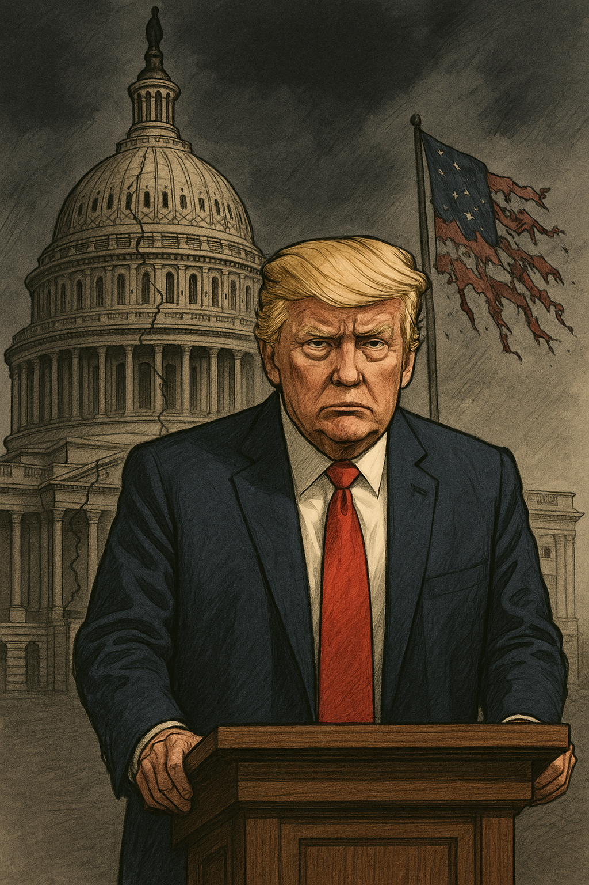

Publicado em 2025-04-25 18:32:07
Em mais um gesto alarmante e sem precedentes, Donald Trump, agora de novo no poder, demitiu abruptamente o general Charles Q. Brown Jr., presidente do Estado-Maior Conjunto das Forças Armadas dos EUA, bem como a almirante Lisa Franchetti, chefe da Marinha, e o general James Slife, vice-chefe da Força Aérea.
A substituição dos principais líderes militares por figuras reformadas, politizadas ou ideologicamente alinhadas não é um episódio isolado: é parte de uma estratégia de domínio absoluto sobre o aparelho de Estado, desvirtuando a competência técnica em favor da obediência pessoal.
A gravidade não reside apenas nos nomes afastados, mas na lógica de poder que os substitui — um Exército à medida do chefe, e não da Constituição.
Ainda mais preocupante é o movimento para destituir os JAGs (Juízes Advogados-Gerais) do Exército, da Marinha e da Força Aérea — precisamente aqueles que asseguram a legalidade interna nas Forças Armadas, garantindo julgamentos justos e aplicação do Código de Justiça Militar.
Substituir os JAGs por nomeados leais coloca em risco não apenas a disciplina e o Estado de Direito dentro do Exército, mas toda a arquitetura jurídica que impede abusos, arbitrariedades e crimes de guerra.
É, de facto, a construção deliberada de um aparelho militar sem freios, transformado num instrumento pessoal, ao serviço de interesses privados e de uma visão autoritária do poder.
Este episódio vem confirmar uma tendência clara e inquietante:
Tudo isto se passa perante um Congresso fragmentado, uma opinião pública polarizada e uma imprensa corajosa, mas frequentemente atacada e deslegitimada.
A questão que se coloca é urgente: quantos golpes mais poderá a democracia americana suportar antes de sucumbir completamente?
Este não é apenas um episódio da crónica política americana contemporânea. É um sinal para o mundo.
É um espelho do que acontece quando a democracia é tratada como espetáculo, as instituições como obstáculos, e a verdade como inconveniência.
A história julgará este tempo. Mas hoje, cabe a todos os que ainda valorizam a liberdade, a justiça e a dignidade humana erguer a voz, resistir e reconstruir.
Porque se o silêncio triunfar, amanhã poderá ser tarde demais.
Com a colaboração de Augustus.
Imagens cortesia de OpenAI (c)